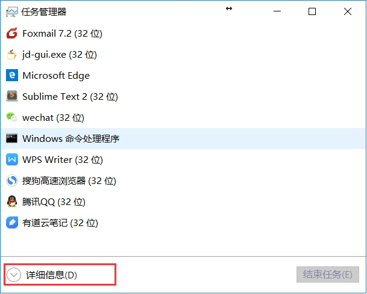
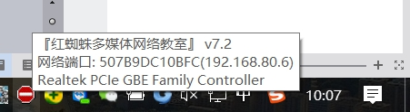
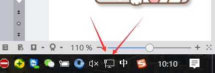
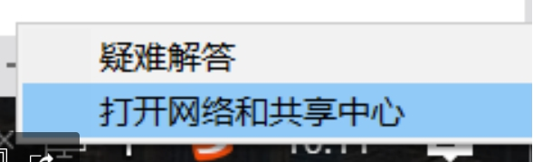
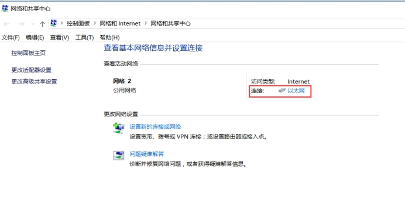
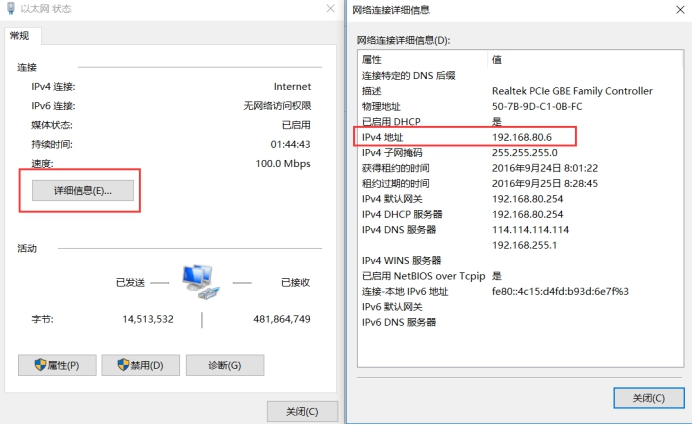
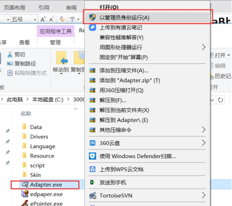
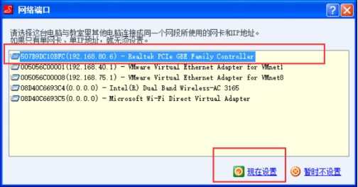
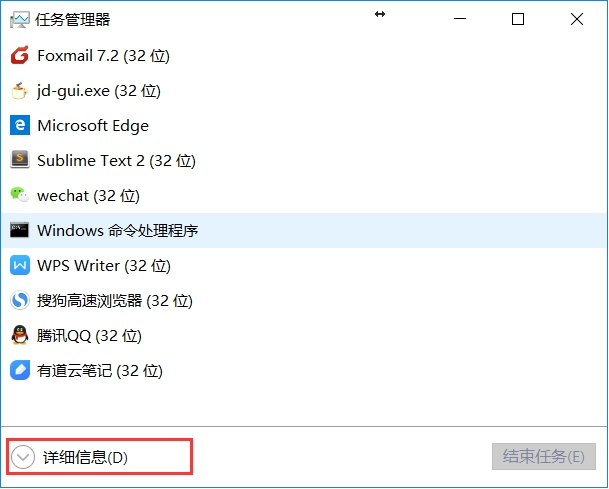
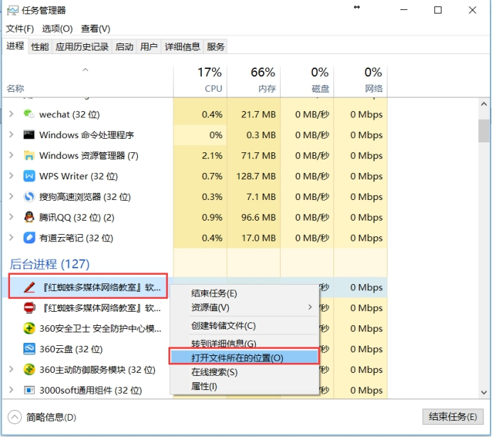

红蜘蛛无法共屏简单修复方法
首先用鼠标移动到电脑屏幕右下角，用鼠标指针指着红蜘蛛的图标，然后会出现一个小框框，看看具体的IP地址，一般来说都是192.168.X.X格式的。
如果格式不对，请点击这里解决

然后现在的判断当前红蜘蛛获取的IP地址是不是你的本地连接所获取的IP地址一样
检查一下自己的电脑有没有获取一个正常的IP地址，一般来说都是192.168.X.X格式的。
查看的方法是，点击电脑右下角

然后右键点击，然后点击《打开网络和共享中心》

然后点击你的本地连接，红色框的位置

然后点击《详细信息》就可以查看IP地址了。

如何快速找到红蜘蛛安装位置的方法
方法1.找到你的红蜘蛛安装的所在位置，找到adapter.exe，然后右键点击《以管理员身份运行》打开。


选择正确的网卡，然后点击现在设置，就可以了。
如果屏幕还是没有反应的话，那就只能等待下一次讲师重新屏幕广播了。！
在任务栏恐怖的地方右键点击，然后选择任务管理器

然后找到红蜘蛛，右键点击，选择《打开文件所在位置》即可。
然后请查看这里
